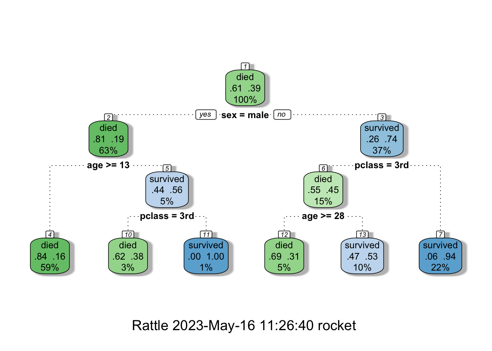

library(tidyverse) #For data manipulation
library(rpart) #To construct CART models
library(rpart.plot) # It also includes titanic data
library(rattle) #For visualizationStatistical Models in R: Part 2
This is part of old lecture notes
This part explains classification and regression trees, following the work of Breiman et al. (there is a copy at the library). Although there are other and improved versions, we cover CART because it is important to understand fundamentals. The R package rpart also follows the same study to construct trees.
We are going to use the following packages. Install those packages (use install.packages("packagenamehere")), if you haven’t already.
Example Problem (Titanic Deaths/Survivors)
The problem Suppose we would like to correctly identify each survivor in Titanic accident just by looking at some traits such as passenger class, sex and age.
Bonus: A version of this example can be found on Kaggle as a tutorial! Check it out from this link.
set.seed(58) #Set the random seed
data(ptitanic) #Call the data
titanic_data <-
ptitanic %>%
select(survived,pclass,sex,age) %>% #Select only required columns
mutate(age=as.numeric(age)) %>% #This is a fix, just for this data set
filter(complete.cases(.)) %>% #Remove all NA including rows
#Split the data into train and test
mutate(train_test = ifelse(runif(nrow(.)) < 0.25,"test","train")) %>%
tbl_df()Warning: `tbl_df()` was deprecated in dplyr 1.0.0.
ℹ Please use `tibble::as_tibble()` instead.print(titanic_data)# A tibble: 1,046 × 5
survived pclass sex age train_test
<fct> <fct> <fct> <dbl> <chr>
1 survived 1st female 29 train
2 survived 1st male 0.917 test
3 died 1st female 2 train
4 died 1st male 30 train
5 died 1st female 25 train
6 survived 1st male 48 train
7 survived 1st female 63 test
8 died 1st male 39 train
9 survived 1st female 53 train
10 died 1st male 71 train
# … with 1,036 more rows#Build the model with the training data
titanic_train <- titanic_data %>% filter(train_test == "train") %>% select(-train_test)
titanic_model <- rpart(survived ~ ., data=titanic_train)
fancyRpartPlot(titanic_model)
Classification and Regression Trees (CART)
CART algorithm is a very convenient and easy to interpret method to partition data in a meaningful way with binary splits (i.e. \(x > A\) and \(x \le A\)). Both regression and classification trees aim to minimize the error (misclassification).
Error rate for regression trees is the squared distance (very similar to linear regression) of each item in the node to the average response (\(\hat{Y_k}\)) value of the node. Suppose there are \(K\) final nodes, each group’s response variable is defined as \(\hat{Y_k} = \dfrac{1}{N_k}\sum_{i \in G_k} y_i\). So the final objective function to minimize is as follows.
\[\min \sum_{k}^K (\min_{i \in G_k} (y_i - \hat{Y_k})^2) + \alpha |K| \]
The complexity parameter \(\alpha\) is used as a balancer between the number of final nodes and total error. If \(\alpha = 0\) then each node will consist of a single item to minimize error.
In classification, it is a bit different. For the sake of simplicity, assume binary classification (0 or 1). A node’s class (C_k) is determined by majority. \(C_k = \argmax_{0,1}\{N_{0,k}, N_{1,k}\}\). We also calculate the quality (or probability) of correct classification with \(\hat{p}_{(C_k,k)} = \dfrac{1}{N_k} \sum_{i \in G_k} I(y_i = C_k)\) (proportion of correct class items). For binary clasification we can simply say \(\hat{p}_k\).
There are three types of error: misclassification, Gini index and cross-entropy.
- Misclassification Error: \(1 - \hat{p}_k\). Just proportion of the wrong assignment.
- Gini Index: \(2\hat{p}_k(1-\hat{p}_k)\).
- Cross-entropy: \(-\hat{p}_k \log(\hat{p}_k) - (1-\hat{p}_k)\log(1-\hat{p}_k)\)
ps. rpart uses Gini index to measure error.
Out-of-sample Analysis
Fitting the model and getting good results is fine. But, if it cannot predict response values outside the training data, then your model overfits.
## In sample prediction classification results
titanic_in_sample <- predict(titanic_model)
print(head(titanic_in_sample)) died survived
1 0.06358382 0.9364162
2 0.06358382 0.9364162
3 0.83690987 0.1630901
4 0.06358382 0.9364162
5 0.83690987 0.1630901
6 0.83690987 0.1630901in_sample_prediction <-
cbind(
titanic_in_sample %>% tbl_df %>%
transmute(survived_predict = ifelse(survived >= 0.5,1,0)),
titanic_train %>% tbl_df %>%
transmute(survived_actual = ifelse(survived == "survived",1,0))
) %>%
mutate(correct_class = (survived_predict == survived_actual)) %>%
group_by(correct_class) %>%
summarise(count=n(),percentage=n()/nrow(.))
print(in_sample_prediction)# A tibble: 2 × 3
correct_class count percentage
<lgl> <int> <dbl>
1 FALSE 146 0.184
2 TRUE 646 0.816titanic_test <- titanic_data %>% filter(train_test=="test") %>% select(-train_test)
titanic_predict <- predict(titanic_model,newdata=titanic_test)
print(head(titanic_predict)) died survived
1 0.00000000 1.0000000
2 0.06358382 0.9364162
3 0.83690987 0.1630901
4 0.83690987 0.1630901
5 0.83690987 0.1630901
6 0.06358382 0.9364162out_of_sample_prediction <-
cbind(
titanic_predict %>% tbl_df %>%
transmute(survived_predict = ifelse(survived >= 0.5,1,0)),
titanic_test %>% tbl_df %>%
transmute(survived_actual = ifelse(survived == "survived",1,0))
) %>%
mutate(correct_class = (survived_predict == survived_actual)) %>%
group_by(correct_class) %>%
summarise(count=n(),percentage=n()/nrow(.))
print(out_of_sample_prediction)# A tibble: 2 × 3
correct_class count percentage
<lgl> <int> <dbl>
1 FALSE 56 0.220
2 TRUE 198 0.780Model Parameters
You can improve the model with these extra properties.
rpart.control(
minsplit = 20, #Min # of items that should be in a node to do a split
minbucket = round(minsplit/3), #Minimum number of items in a final node
cp = 0.01, #Complexity parameter (min improvement to generate a split)
maxcompete = 4, #Not related to model. Some printout for analyses
maxsurrogate = 5, #Used to deal with missing values
usesurrogate = 2, #Used to deal with missing values
xval = 10, #Number of cross validations
surrogatestyle = 0, #Used to deal with missing values
maxdepth = 30 #Tree depth
)Comparison with Logistic Regression
titanic_logit_model <- glm(survived ~ ., data=titanic_train,family=binomial(link = "logit"))
titanic_probit_model <- glm(survived ~ ., data=titanic_train,family=binomial(link = "probit"))
titanic_logit_in_sample <- predict(titanic_logit_model,type="response")
titanic_logit_in_sample_prediction <-
data.frame(in_sample=(titanic_logit_in_sample >= 0.5)*1,
actual=(titanic_train$survived == "survived")*1) %>%
mutate(correct_class= (in_sample == actual)) %>%
group_by(correct_class) %>%
summarise(count=n(),percentage=n()/nrow(.))
print(titanic_logit_in_sample_prediction)# A tibble: 2 × 3
correct_class count percentage
<lgl> <int> <dbl>
1 FALSE 169 0.213
2 TRUE 623 0.787titanic_logit_out_of_sample <- predict(titanic_logit_model,newdata=titanic_test,type="response")
titanic_logit_out_of_sample_prediction <-
data.frame(out_of_sample=(titanic_logit_out_of_sample >= 0.5)*1,
actual=(titanic_test$survived == "survived")*1) %>%
mutate(correct_class= (out_of_sample == actual)) %>%
group_by(correct_class) %>%
summarise(count=n(),percentage=n()/nrow(.))
print(titanic_logit_out_of_sample_prediction)# A tibble: 2 × 3
correct_class count percentage
<lgl> <int> <dbl>
1 FALSE 59 0.232
2 TRUE 195 0.768titanic_probit_in_sample <- predict(titanic_probit_model,type="response")
titanic_probit_in_sample_prediction <-
data.frame(in_sample=(titanic_probit_in_sample >= 0.5)*1,
actual=(titanic_train$survived == "survived")*1) %>%
mutate(correct_class= (in_sample == actual)) %>%
group_by(correct_class) %>%
summarise(count=n(),percentage=n()/nrow(.))
print(titanic_probit_in_sample_prediction)# A tibble: 2 × 3
correct_class count percentage
<lgl> <int> <dbl>
1 FALSE 166 0.210
2 TRUE 626 0.790titanic_probit_out_of_sample <- predict(titanic_probit_model,newdata=titanic_test,type="response")
titanic_probit_out_of_sample_prediction <-
data.frame(out_of_sample=(titanic_probit_out_of_sample >= 0.5)*1,
actual=(titanic_test$survived == "survived")*1) %>%
mutate(correct_class= (out_of_sample == actual)) %>%
group_by(correct_class) %>%
summarise(count=n(),percentage=n()/nrow(.))
print(titanic_probit_out_of_sample_prediction)# A tibble: 2 × 3
correct_class count percentage
<lgl> <int> <dbl>
1 FALSE 60 0.236
2 TRUE 194 0.764Benchmarking
Let’s see all analyses together. Keep in mind that we did not do any external cross-validation (it would be good exercise).
complete_benchmark <-
data.frame(
model = c("CART","Logistic Reg. - Logit Link",
"Logistic Reg. - Probit Link"),
in_sample_accuracy = c(
in_sample_prediction %>%
filter(correct_class) %>%
transmute(round(percentage,4)) %>%
unlist(),
titanic_logit_in_sample_prediction %>%
filter(correct_class) %>%
transmute(round(percentage,4)) %>%
unlist(),
titanic_probit_in_sample_prediction %>%
filter(correct_class) %>%
transmute(round(percentage,4)) %>%
unlist()
),
out_of_sample_accuracy = c(
out_of_sample_prediction %>%
filter(correct_class) %>%
transmute(round(percentage,4)) %>%
unlist(),
titanic_logit_out_of_sample_prediction %>%
filter(correct_class) %>%
transmute(round(percentage,4)) %>%
unlist(),
titanic_probit_out_of_sample_prediction %>%
filter(correct_class) %>%
transmute(round(percentage,4)) %>%
unlist()
)
)
print(complete_benchmark) model in_sample_accuracy out_of_sample_accuracy
1 CART 0.8157 0.7795
2 Logistic Reg. - Logit Link 0.7866 0.7677
3 Logistic Reg. - Probit Link 0.7904 0.7638References
- These lecture notes were initially used at Bogazici University Engineering Management Master Program.